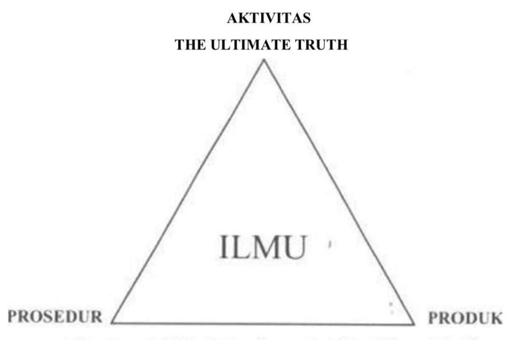
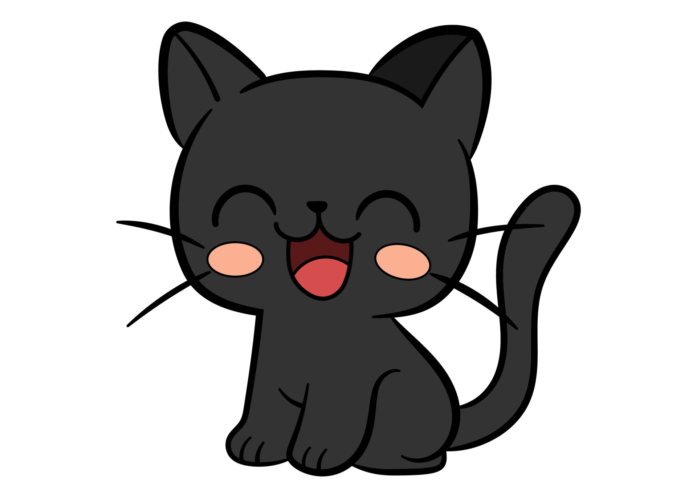

Intelektualitas dan Aktivitas Intelektual
Apa itu Intelek?
jika ditanya Intelek, ingatlah si budi, “Budi on steroid”
Intelek (KBBI 2015) daya atau proses pemikiran yang lebih tinggi berkenaan dengan sebuah pengetahuan atau daya akal budi.
Intelligere (latin: memahami Inter = antara legere = mengumpulkan, mencerap, membaca
Chaplin (1981) Intelect (english) = 1. Proses Koginif atau berpikir 2. Kemampuan mental atau intelegensi
Mahfudin Shalahudin Intelek: akal budi, atau kemampuan meletakan hubungan dari proses berpikir.
Jean Piaget: akal budi berdaarkan aspek kognitif, khususnya proses berpikir lebih tinggi.
Tahap perkembangan Intelek
Kata Jean Piagget: ada 4 tahap
- Tahap Sensoris - Motoris
- Tahap Preoperasional
- Tahap Operasional Kongkret
- Tahap Operasioal Formal
Tahap Sensoris
Dialami usia 0-2 tahun Semua perbuatan berdasarkan perwujuan proses pematangan masa pematangan sensoris dan motoris. kata Piaget, interaksi anak dgn lingkungan melalui perasaan dan otot-ototnya.
Tahap Preoperasional
Usia 2 - 7 tahun Tahap Intuisi, kecenderungan perkembangan kognitif ditandai suasana intuitif. Perbuatan rasionalnya tidak didukung oleh perasaan, atau sikap orang orang disekitarnya. Kata Piaget, anak bersifat egosentris, sering mengalami masalah dgn lingkuangannya.
Tahap Operasional Kongkret
Usia 7 -11 tahun. Anak mulai menyesuaikan diri dengan realita yang konkret dan berkembang rasa ingin tahu. Egosentris berkurang dan lebih objektif. Anak mulai mengamati dan mengevaluasi orang lain.
Tahap Operasional Formal
Anak usia 11 tahun keatas
Berpikir logis, mampu mewujudkan sesuatu yang bermakna. Aspek moral dan perasaan berkembang untuk menyelesaikan tugas-tugas.
Intelektualitas
Intelektualitas dan akal budi adalah kemampuan epistemologi.
Akal budi: mengidentifikasi dan mendefinisikan sesuatu dan bekerja hanya berdasarkan skema yang telah ada, logis, jelas dan terpisah pisah.
Intelektualitas: kemampuan yang lebih tinggi dari akal budi. Intelektualitas tidak menerima identifikasi sebagai sesuai yang tersendiri, tetapi melihat dengan kaitannya dengan realtias total.

Segitiga keterkaitkan antara ilmu prosedur dan produk. Ilmu melahirkan produk melalui prosedur prosedur yang sistematis.
Aktivitas Intelektual
Aktivitas = kegiatan Intelektual = cerdas, berakal, berdasarkan ilmu pengetahuan.
Aktivitas Intelektual = perilaku cerdas / kegiatan yang berdasarkan pengetahuan atau kecerdasan yang tinggi.
Kata Wecshler (1975) ada 4 karakteristik
sadar + tujuan + rasional + nilai
- Adanya kesadaran atas tindakan yang ditempuh
- Selalu memiliki tujuan atau diarahkan pada sasaran tertentu
- Berdasarkan rasionalitas yaitu berpikiran logis dan kosisten
- Memiliki nilai atau makna dan kegunaan
manusia memiliki hasrat ingin tahu, untuk mendapatkan pengetahuan dapat dengan cara ilmiah maupun non ilmiah. Ilmiah dengan cara sistematis, dengan saran bahasa logika, matematika, statistika. orang yang menggunakan kecerdasarannya untuk menyelesaikan masalah => intelektual/cendikiawan kegiatan menggunakan kecerdasan untuk pencaharian/pengembangan penegetahuan => aktivitas intelektual.
SEMOGA BERMANFAAT

Soal Terkait - Jawaban Menyesatkan
30
Menurut KBBI 2005 intelek adalah daya atau proses pemikiran yang lebih tinggi yang berkenaan dengan, kecuali? A. Etika B. Pengetahuan C. daya akal budi D. kecerdasan Berpikir E. Ilmu
32
Pencatatan teknologi dalam tindakan kedokteran agar mendapatkan perlindungan dan payung hukum atas hak seseorang inventor adalah:
- Paten Industri
- Hak Cipta c. Paten sederhana
- Intevention
- royalti.